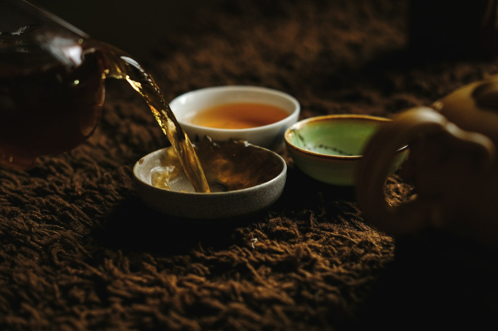
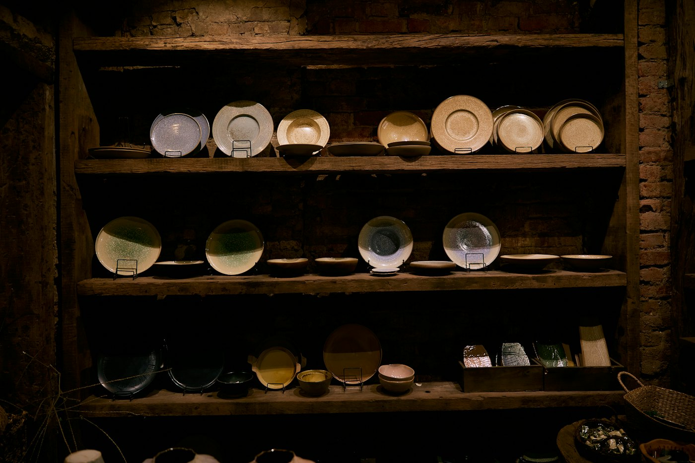
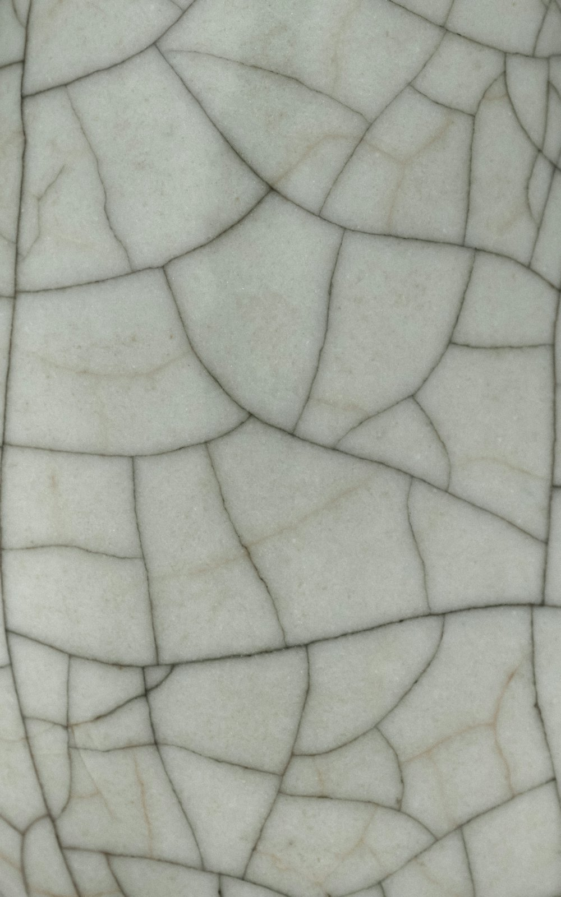

Каждая чаша — единственная
Чаши, чайники, тарелки и вазы. Точим на гончарном круге в Санкт-Петербурге, обжигаем при 1 250 °C и глазуруем вручную. Поэтому повторить вещь до последнего пятна нельзя, а сделать близкую можно.

1 250 °Cтемпература второго обжига, после него глазурь не боится воды и посудомойки
4 неделиот комка глины до готовой вещи: сушка и два обжига быстрее не делаются
от 20 шт.серии посуды для кафе, ресторанов и чайных, с вашим клеймом на донце
по Россииупаковываем в двойной короб и заменяем вещь, если она приехала разбитой
Не выравниваем неровности: в них вся вещь
- Глина
- Шамот и фарфоровая масса. Часть замешиваем сами, поэтому знаем, как она поведёт себя в огне.
- Круг
- Каждую вещь точим на круге и доводим руками. Отливок и покупных заготовок у нас нет.
- Огонь
- Два обжига: при 980 °C и при 1 250 °C. Глазурь никогда не подчиняется до конца, отсюда пятна, кракле и оттенки.
- Стол
- Внутри посуды только пищевые глазури. Из неё можно есть и пить, её можно мыть в посудомойке и греть в микроволновке.

